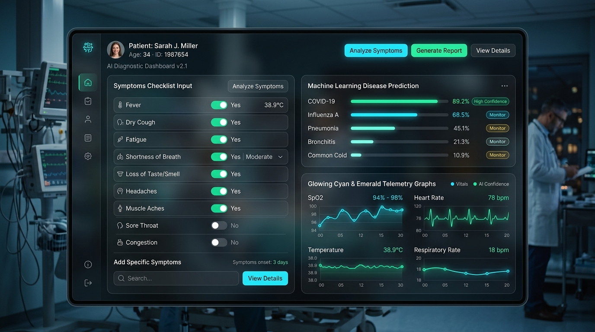
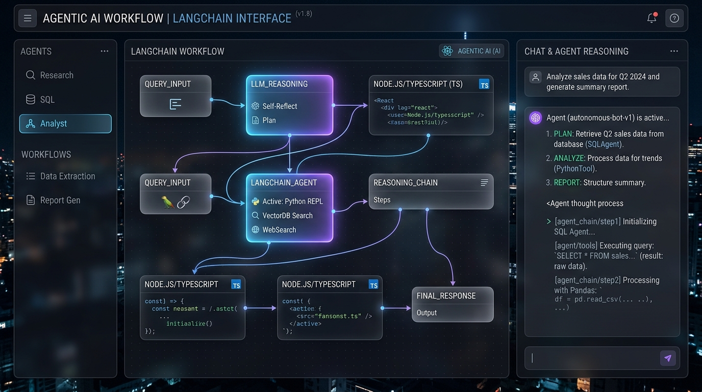
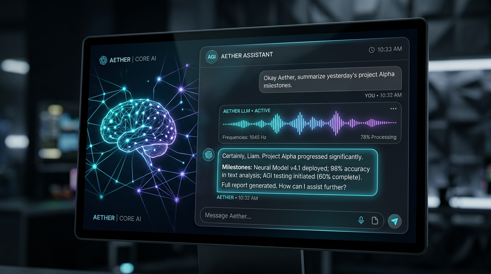
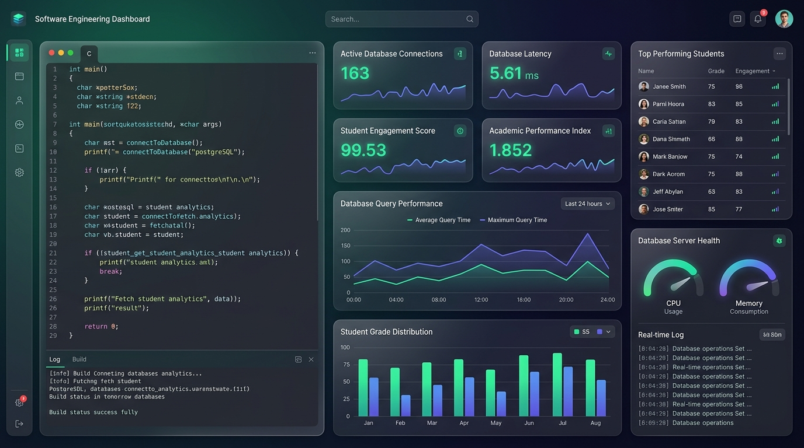
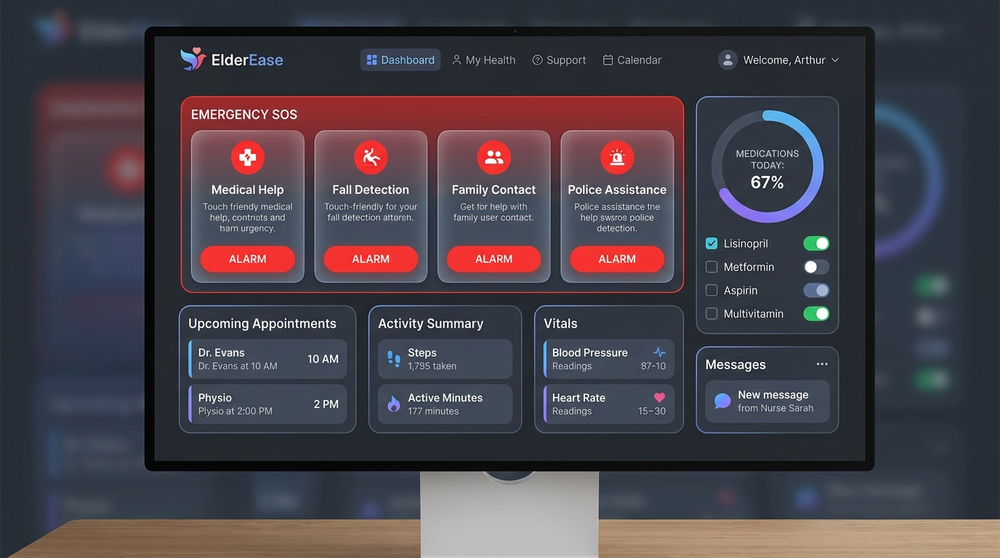
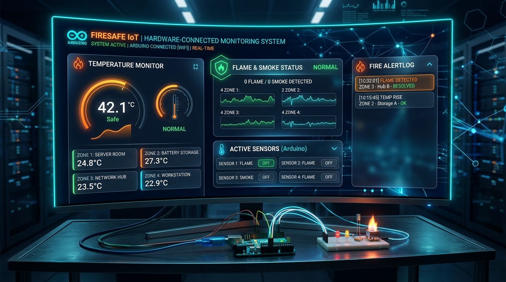
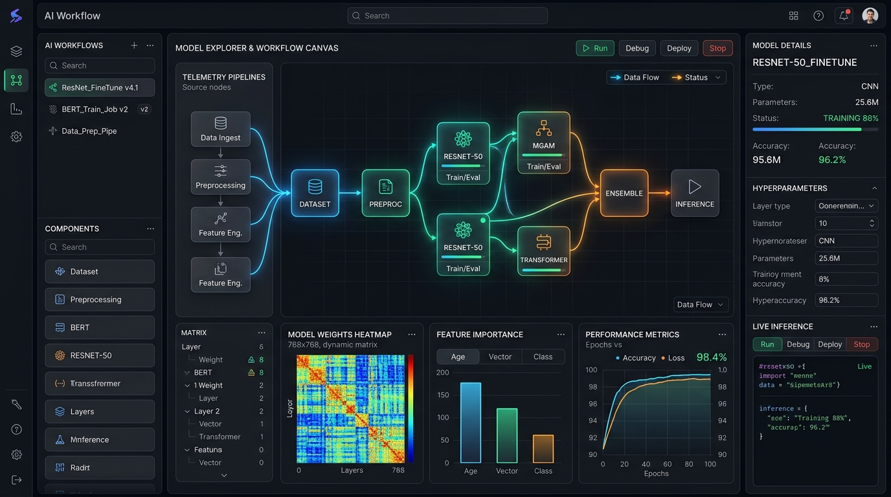

Passionate about extracting actionable intelligence from complex data matrices and engineering predictive machine learning systems. Specializing in Python, Scikit-Learn, Data Pipelines, Statistical Modeling, and Agentic AI workflows, backed by strong algorithmic and problem-solving foundations in Java & C.
GitHub Repos
Primary Focus
LeetCode & CodeChef
Analytical Rigor
Dedicated to Machine Learning, Data Analytics, and Data Pipeline Engineering.
DATA_ENGINEER: RAM_DWARAMPUDI
Pursuing a Bachelor of Technology in Computer Science & Business Systems at Vishnu Institute of Technology with a dedicated career focus on Machine Learning, Data Analytics, and Data Engineering.
I specialize in uncovering insights from raw data, building supervised machine learning models in Python & Scikit-Learn (such as symptom-based medical disease prediction and affective emotion analysis), and structuring multi-agent reasoning chains with LangChain & Google Gemini AI.
Complementing my data passion with rigorous algorithmic foundations in Java and C, I actively solve competitive coding challenges on LeetCode & CodeChef to optimize computational complexity across data structures.
Sharpening data structures, mathematical logic, and time-space optimization across competitive platforms.
@Ram_Dwarampudi
Solving algorithmic challenges in Java, Python, and C — covering Arrays, HashMaps, Trees, Binary Search, and Dynamic Programming.
Visit LeetCode Profile@ram_dwarampudi
Participating in rated Starters and algorithmic contests to hone speed, edge-case analysis, and optimal algorithmic design.
Visit CodeChef ProfileInteract with my developer environment directly from your browser. Click quick command pills or type your own commands.
Core competencies across Machine Learning algorithms, Data Analytics, Pipeline Engineering, and Core Languages.
Pandas, NumPy, feature preprocessing, exploratory data analysis, Scikit-Learn pipelines, and model evaluation.
Multi-class classification, Decision Trees, Random Forests, symptom-disease diagnostic models, and hyperparameter tuning.
Autonomous agent workflows with LangChain, Google Gemini API, multi-turn context retention, and reasoning tool invocation.
Exploratory data analysis, statistical distributions, trend identification, correlation matrices, and analytical reports.
Object-Oriented Design, Collections Framework, Data Structures, and enterprise financial stream processing (JPMC SWE).
Pointers, dynamic struct allocation, memory management, and binary search indexing for custom data engines.
Sensor data streaming, Arduino & ESP8266 Wi-Fi telemetry pipelines, real-time threshold triggers, and Blynk cloud data sync.
LeetCode, CodeChef, Jupyter Notebooks, Git & GitHub version control, Linux CLI, and VS Code developer environments.
Real-world applications spanning Machine Learning classification, Agentic AI, Data Analytics, and Systems Engineering.

Supervised machine learning diagnostic classifier in Python predicting potential illnesses from patient symptom matrices with probability scores.

Autonomous conversational AI platform built with React & TypeScript utilizing LangChain and Google Gemini for multi-step agent reasoning and tool orchestration.

Intelligent multi-turn conversational agent in Python powered by Google Gemini API with token streaming, code syntax parsing, and dark glass UI.

Optimized C database engine featuring dynamic struct memory allocation, binary search indexing, persistent file serialization, and academic analytics.

Senior-accessible healthcare web platform featuring 1-touch emergency SOS alert dispatch, medication reminders, and simplified health telemetry.

Autonomous IoT safety mesh utilizing Arduino and Blynk cloud to detect flame and smoke anomalies in real time, triggering instant emergency mobile alerts.
Financial software engineering modules in Java processing live stock telemetry, order book calculations, and trader threshold buy/sell indicators.

Affective computing pipeline in Python analyzing facial landmark streams and textual sentiment to classify emotional states with confidence distributions.
Chronological progression of education, Machine Learning projects, and technical initiatives.
Enrolled in an interdisciplinary curriculum balancing software engineering with strategic enterprise innovation and data analytics.
Continuous independent model development and competitive algorithm challenges.
Completed secondary higher education with intensive focus on Mathematics, Physics, and Chemistry.
Built initial academic curiosity in mathematics, general science, and computational thinking.
Looking for an ML Engineer, Data Analyst, or Data Engineer? Let's connect.
Fill out the form below and I will respond to your message promptly.